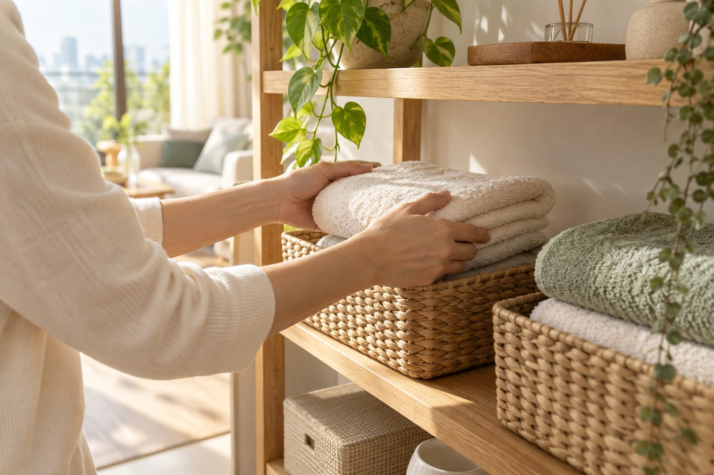

片づけ・整理のお手伝い
残すものを一緒に確認しながら。棚やお部屋の整理を、できるところから。
相談内容を選ぶ ↗A little help, a lighter day.
片づけ、お掃除、模様替え。
小さな「困った」から話せる、街の便利屋です。
まずは内容を整理するデモです。予約は入りません。
HELLO, SORANE
後回しになっていた棚の片づけ。
ひとりだと動かせない家具。気になっていたお部屋の汚れ。
大きな工事でなくても、暮らしが軽くなるお手伝いを。
WHAT WE CAN HELP WITH
ここにあるのは、サービスの構成例。
実際の対応内容は開業時に確定します。
BEFORE WE BEGIN
初めての相談で不安が残らないように。
こんな説明の仕方を、大切にしたいと考えています。
希望する作業と触れてほしくないものを整理します。
作業費・交通費・追加の可能性を見積りで確認します。
予定外の作業は、内容と費用の確認後に進める設計です。
提案用の運用方針です。実際の条件は事業者確認後に掲載します。
ABOUT THE ESTIMATE
広さ、荷物の量、作業の内容。
暮らしのお手伝いは、一件ずつ違うから。
必要なことを整理してから、お見積りへ。
価格・対応エリア・受付時間は未設定です。架空の割引や口コミは掲載していません。
HOW IT WORKS
うまく説明できなくても大丈夫。まずは近い内容から。
作業範囲と見積り、日時を確認してから依頼へ。
終わった場所を一緒に確認。気になる点もその場で。
QUESTIONS
少量の片づけなどから相談できる構成です。実際の最低作業条件は、事業者が決定した内容を掲載します。
作業内容を確認して見積りを案内する流れを想定しています。本デモでは金額の確定や見積り送信は行いません。
予定外の作業が必要な場合、実施前に内容と費用を確認する方針案です。正式な料金条件は本番公開時に確認します。
現在は仮設定のため未掲載です。本番では市区町村、出張費、受付時間を明示します。
AI写真は実際のスタッフを示しません。担当者の体制・指名可否は事業者に確認して掲載します。
できません。提案用デモのため、下の操作は相談内容の確認までです。入力の送信や予約は発生しません。
LET’S START SMALL
近い内容を選んでみてください。
個人情報は入力せず、相談の流れだけ体験できます。